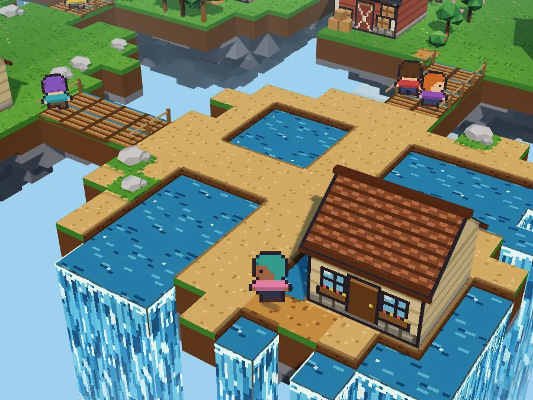
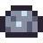
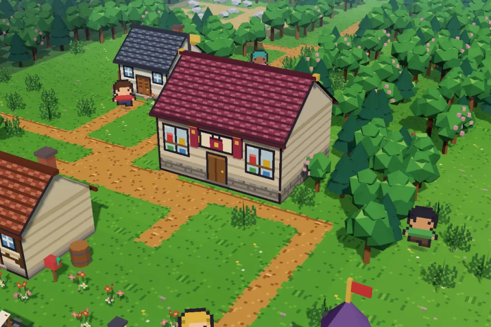
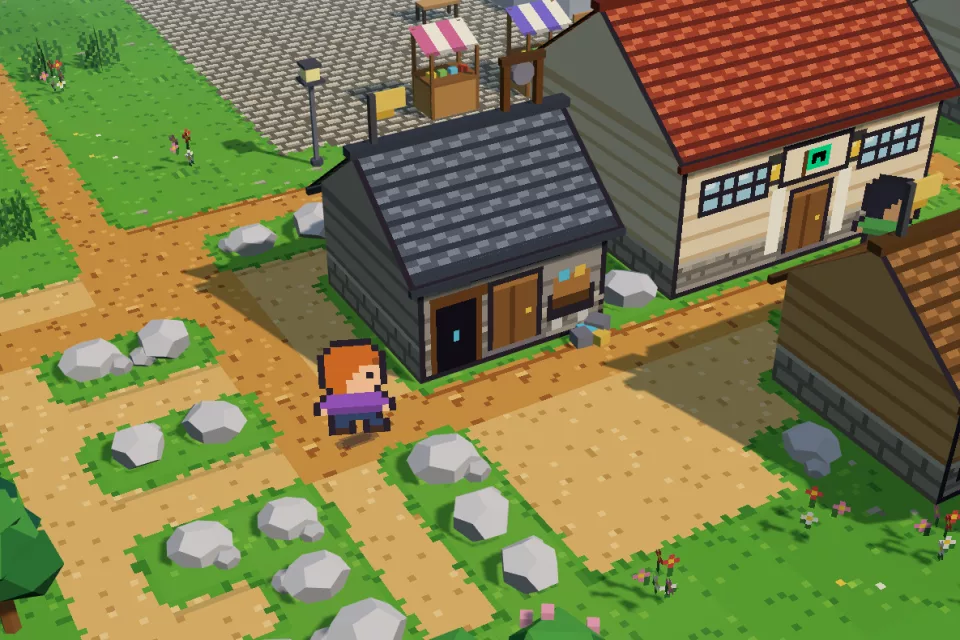
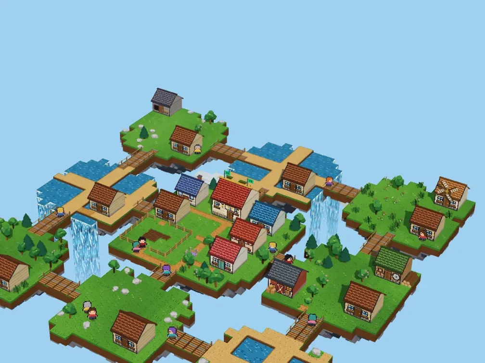

A market townin the sky.
Fish, farm and craft on your own floating islands, then sell to four shopkeepers whose prices move with their stock. Free in your browser. Sign in with Google or email.
One game day lasts 24 real minutes. Sarah pays 7 coin for a fish right now.
Drag to turn, or press Q ESwipe to turn
Gather, craft, sell.
Gathering costs energy, never coin, so you can start with nothing. What you bring home sells raw, or crafts into something worth more.
- 4
- shopkeepers, each pricing from their own shelf
- 9
- floating islands in every Homeland
- 4
- players in a party
- 1
- save of the day’s ledger to NEAR
-

Cast where the water ripples
Wait for the bite, then hold the fish inside the green zone. Sell it raw, or grill it over a piece of wood.
- Fish 8
 Wood 6
Wood 6 Grilled fish 20
Grilled fish 20
-

Chop, mine, make a pickaxe
Swing at trees and rock. Tools wear down, and Ben sells new ones or repairs yours.

2 Ore 12- Wood 6
 Pickaxe 45
Pickaxe 45
-

Grow wheat on fifteen plots
Hoe, plant, water, harvest. Rain waters it for you, and nothing grows in winter.
 2 Wheat 5
2 Wheat 5 Bread 16
Bread 16
You gather it. Someone buys it. The whole town feels it.
When fishers flood the market, fish gets cheap. When nobody chops, wood climbs.
Prices follow the shelf.
Four shopkeepers price from their own shelf. Full means cheap, empty means they pay you well. Pick a shop to see its shelf now.
Sarah’s Fish Stall
Buys fish and wood. Sells fish and grilled fish.
| Good | Stock | You buy | You sell |
|---|
Base prices from the game’s economy file, until the game server answers.
- What’s fish worth today?
- Fresh fish is 9 coin today. I keep about 20 on ice, so it’s a fair day to buy.
Try moving a price yourself.
No one sets prices here. Each shopkeeper works them out from their own shelf, every game hour. This is Sarah’s stall running the game’s real rule. Pick a moment, or drag the sliders.
A fish costs you 9 coin. Sarah pays 7 for yours. Her shop window: “My fish stock is just right. Price steady.”
You buy atShe pays you
- You buy at
- 9
- She pays you
- 7
- Against usual
- Usual
Where every coin comes from.
Coin enters when the townsfolk buy goods. Fees and a 5% burn take it back out. Pick a part of the town to follow its coin.
Players
You earn coin by selling raw goods to the shops and to other players, and spend it on food, tools, repairs and fees.
How a day reaches NEAR.
The next save is at 06:00 game time.
You play
Every catch, craft and trade goes into the game’s ledger at once, so play never waits for the chain.
06:00, the day closes
At dawn the server adds up the day for every player.
A fingerprint
The day’s ledger folds into one short fingerprint, a Merkle root, so any line can be proved later.
Written to NEAR
Balances and the fingerprint go to the contract in one transaction. Player market sales go on chain right away.
Runs on NEAR testnet, so coin and items have no cash value. See the contract Read the code
Nine islands, all yours.
Every player gets a Homeland above the town: your house, a Town Hall and a farm on the centre island, and eight more waiting in the fog.

Town Hall
Level it up to open islands and buildings. Hire farmers, woodcutters and cooks.
Farm
Fifteen plots beside your house. Two wheat bake one loaf.
Sawmill and windmill
They keep working while you are away, until the storehouse is full.
Plank bridges
Each island you open joins the rest with a bridge. Street lights glow at night.
Your house
Mom is home. Lie down in bed for a nap and you get back 30 energy a minute.
Open the next island.
Hover a locked island and it glows. Click it, pay the wood, ore and coin, and your builder lays the bridge. Later islands ask for a higher Town Hall.
- Town Hall level
- 1
- Cost
- 10 wood
- Building time
- 30 seconds
Bring up to three friends home.
A party holds four. You decide what each friend can do in your Homeland.
- Visitor
- Walks, chats and eats at your place.
- Helper
- Chops, mines, fishes and farms for you, and keeps a daily share.
- Builder
- Starts buildings from their own bag. Helpers can cut 15 seconds off a job.
Trade
Up to 3 kinds of goods plus coinYou
Fish4
Wood6
Mira#20481
Bread2
Coin13
ReadyWalk the town together.
Take the portal down from your Homeland. The village is shared by every player, and most buildings have a room inside.








The square
A fountain in the middle, the four shopkeepers’ stalls along one side and players’ stalls along the other, with benches to sit on and the stage where a band plays every night.
Four seasons, one clock.
A game hour lasts a real minute, so a day takes 24 and night falls on every island at once. Each season lasts seven days and changes what the land gives.


Before you move in
Does it cost anything?
No. It is free in your browser and runs on NEAR testnet, where coin and items have no cash value.
Do I need a crypto wallet?
No. Sign in with NEAR Auth using Google or an email. The game pays the network fees, and you never see a seed phrase.
What do I start with?
100 coin, 3 loaves of bread, 3 wheat and four tools. You land in your own Homeland, with a portal down to the market town.
Can I play with friends, or on a phone?
Both. A party holds four players, and the game runs in a phone browser, upright or sideways. You can also walk the village as a guest before signing in.
Your islands are waiting.
Nothing to install, no wallet to set up. Sign in with Google or email and start with 100 coin.
Play free in your browser